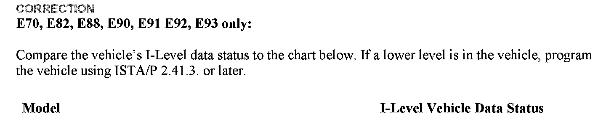
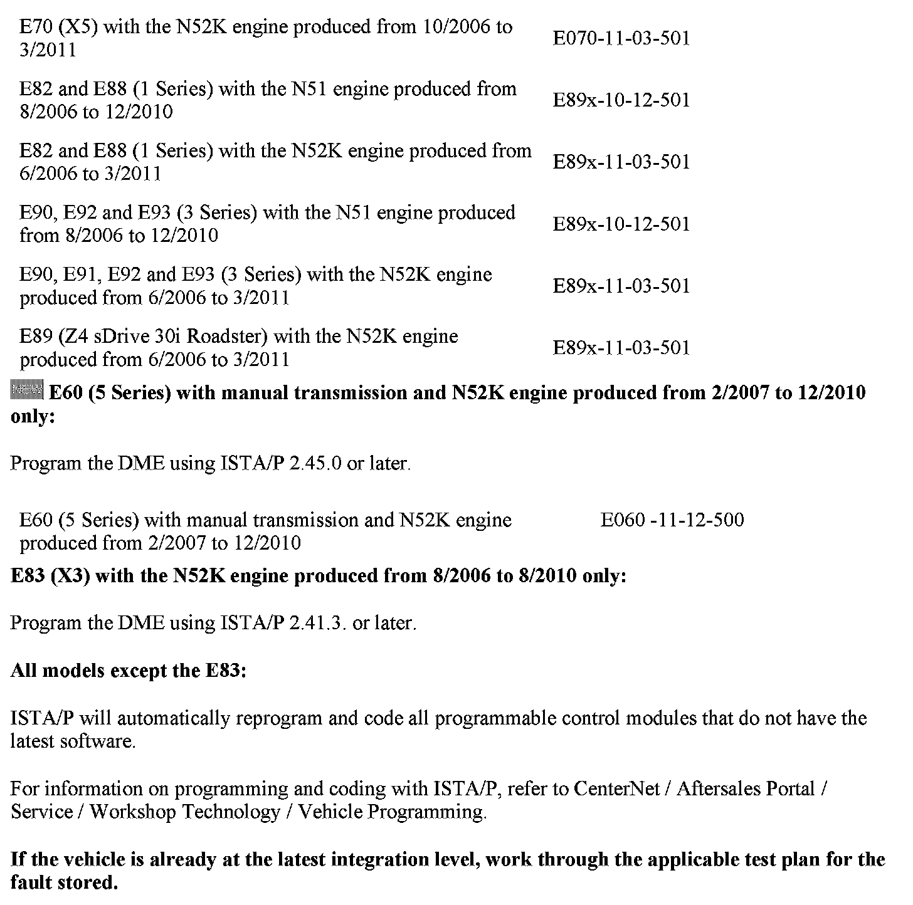
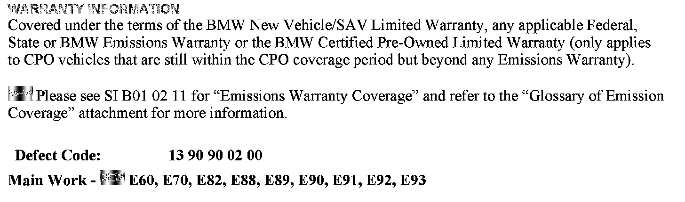
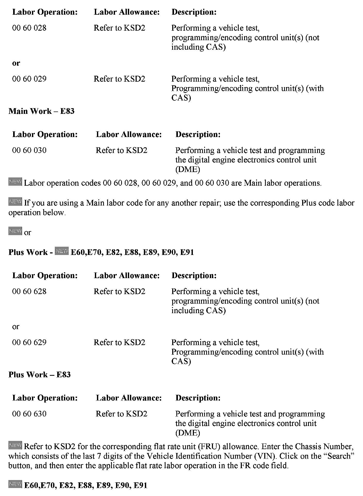
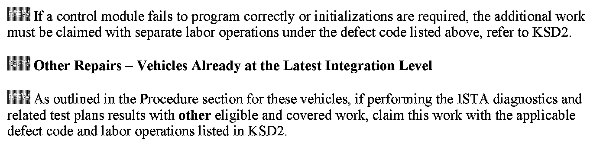

Engine Controls - DTC 2A1A/MIL ON While Driving
SI B12 01 11Engine Electrical Systems
January 2012
Technical Service
This Service Information bulletin supersedes SI B12 01 11 dated September 2011.
[NEW] designates changes to this revision
SUBJECT
DME FC: 2A1A Tank Ventilation System
MODEL
E60 (5 Series) with N52K engine produced from 2/2007 to 12/2010
E70 (X5) with N52K engine produced from 10/2006 to 3/2011
E82 and E88 (1 Series) with N51 engine produced from 8/2006 to 12/2010
E82 and E88 (1 Series) with N52K engine produced from 6/2006 to 3/2011
E83 (X3) with N52K engine produced from 8/2006 to 8/2010
E90, E92 and E93 (3 Series) with N51 engine produced from 8/2006 to 12/2010
E90, E91, E92 and E93 (3 Series) with N52K engine produced from 6/2006 to 3/2011
E89 (Z4 sDrive 30i Roadster) with N52K engine produced from 6/2006 to 3/2011
SITUATION
The customer complains that the Service Engine Soon lamp has illuminated while driving.
CAUSE
Software error in the DME calibration regarding the evaporative system tank ventilation valve monitoring. Concerns manual transmission vehicles that are only driven in a highly efficient manner, as described below:
^ Driven with low engine load
^ Driven with low engine RPM
^ Driven with low road speed


CORRECTION



Warranty